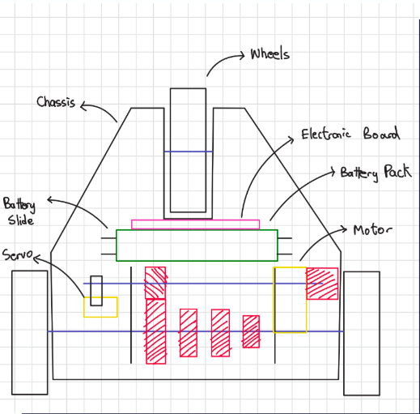
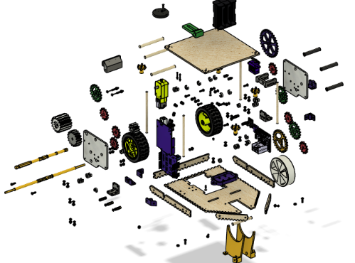
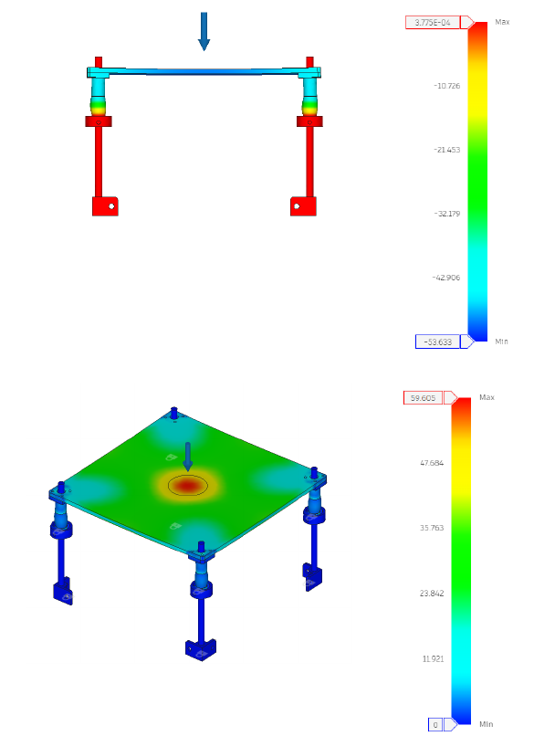

ME 371 · ENGINEERING DESIGN
Built to take
the impact.
Designed hardware and validated a small vehicle against speed, impact, and traversal requirements.
DESIGN, IMPACT CALCULATIONS & FEA↓ SCROLL TO EXPLORE
MY ROLEElectronics mounting, Scotch yoke mounting, shaft collars, impact calculations and FEA
TOOLS & METHODSFusion 360 design, Fusion 360 FEA, hand calculations (impact), manufacturing
TEST TARGETS1.25 m/s minimum · 1 kg lift · 3 kg drop · 3 traversals
01 / OBJECTIVE
Pass every
benchmark.
- Build a vehicle capable of at least 1.25 m/s.
- Meet the 1 kg lifting and 3 kg drop requirements.
- Complete at least 3 traversals in one minute.
02 / DESIGN PROCESS
Making the parts fit together.
01
Mechanical integration
- Designed the mounting of electronic components and the Scotch yoke mechanism.
- Designed smaller plastic components, including shaft collars.
- Ensured clash-free integration of components throughout the vehicle and developed the integration strategy.
02
Impact design
- Led hand calculations and Fusion 360 FEA for the impact benchmark.
- Reviewed the spring-supported roof and chassis response before making design changes.
DESIGN DEVELOPMENT
From layout to a working assembly.


03 / TESTING & VALIDATION
Calculate.
Simulate. Test.
01
Hand calculations
- Predicted approximately 51 mm of impact deflection.
02
Fusion 360 FEA
- The model predicted approximately 59 mm of displacement with four springs installed.
- Compared analytical and FEA predictions before updating the design.
03
Physical changes
- After the FEA and physical testing, added springs to reduce displacement.
- Added posts beneath the chassis to limit chassis deflection.

04 / RESULTS
All criteria passed.
1.28 m/s
Travel speed
- Exceeded the required 1.25 m/s.
Passed
Load requirements
- Passed the 1 kg lift and 3 kg drop tests.
12
Traversals in one minute
- Exceeded the three-traversal requirement and broke the course record.
NEXT PROJECT
View project ↗